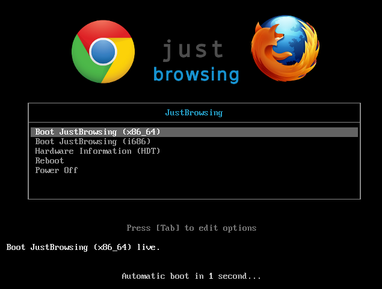
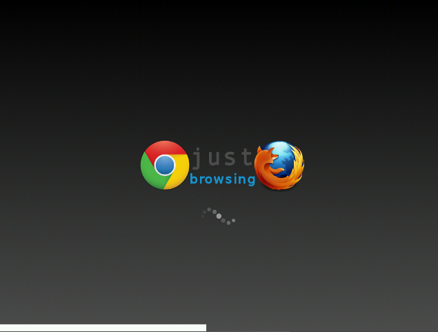

Quick Start
Quick Start Screenshots
Screenshots Download
Download Source Code
Source Code About
AboutWelcome.

It's that simple.
Quick Start
Just Browsing is a "live CD" that does not make any changes to the existing operating system on the computer. Enjoying a simple computing experience with only a web browser (your choice of Mozilla Firefox or Google Chrome) is just a few steps away.
| 1.) Download ISO image (note: rather large, may take awhile to download): |
| 2.) Burn to CD-R (or DVD±R) Instructions for:
| ||||||||||||||||
| 3.) Reboot/restart the computer | ||||||||||||||||
| 4.) Boot from CD-ROM Hold the BIOS setup hotkey (varies) on the keyboard when the computer powers on:
| ||||||||||||||||
Select CD-ROM as 1st boot priority:
| ||||||||||||||||
Alternatively, quick Boot Menu:
| ||||||||||||||||
| 5.) You should see this bootloader (otherwise go back to Step 4.):
 | ||||||||||||||||
| 6.) Finally the splash screen:
 |

About
| • Choose Firefox or Chrome - whichever is more comfortable to you. |
| • No logins, no malware, no sluggish boot. Designed with old machines in mind. |
| • A calculator, text editor, timer and more are always one click away. |
| • Your privacy protected - a lockscreen to keep out intruders |
| • Your history is erased when you turn off the computer |
JustBrowsing is built on the excellent ArchLinux, a rolling-release distribution, which keeps it always up-to-date. It uses the light-weight window manager, i3, and keeps the experience uncluttered. A bottom panel, adeskbar, displays the time and date, and has all the settings visible, no hunting around. Free and open source.


{kind=link}
{kind=link}
{kind=link}
{kind=link}
{kind=link}
{kind=link}
{kind=link}
{kind=link}
{kind=link}
{kind=link}
{kind=link}